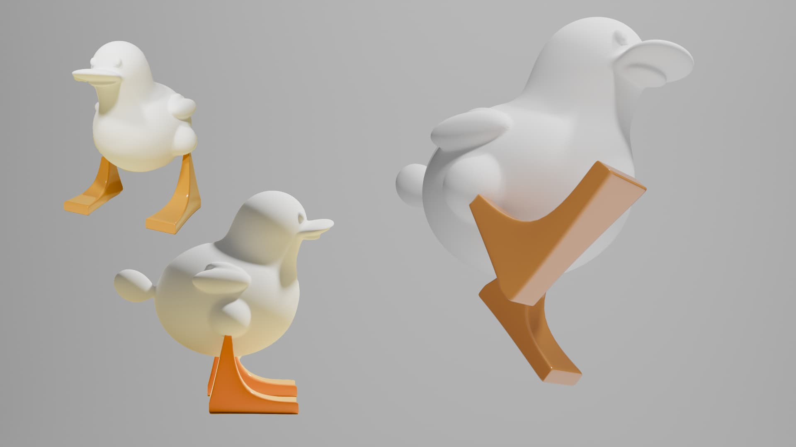
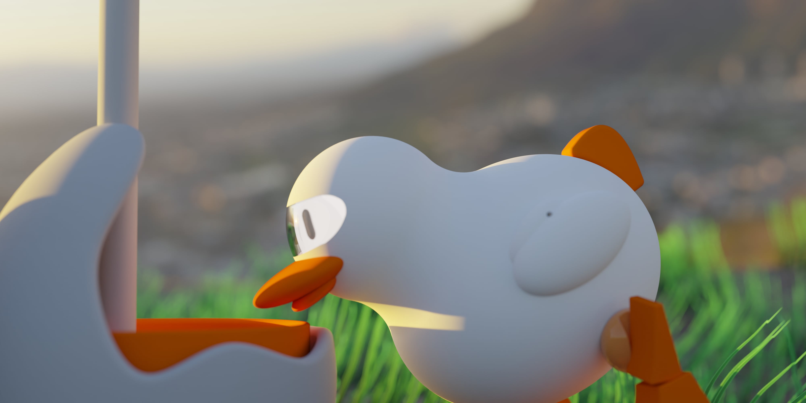
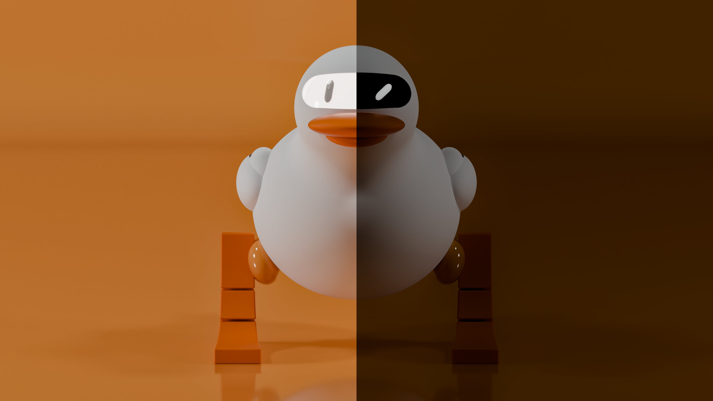

DUCKY is a group project developed during the third year of the Product Design Laboratory. We wanted to create a design language which makes robots more warm and friendly looking.
In fact, although the course had a strong focus on engineering, we decided to concentrate instead on the aesthetic, exploring how thoughtful design could help improve the social acceptance of robotic life forms in public environments.
That's how DUCKY was born — a robotic duck designed for public gardens, equipped with multiple facial expressions, sounds, and interactive behaviors to create a sense of familiarity and playfulness.